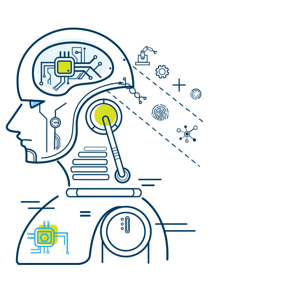
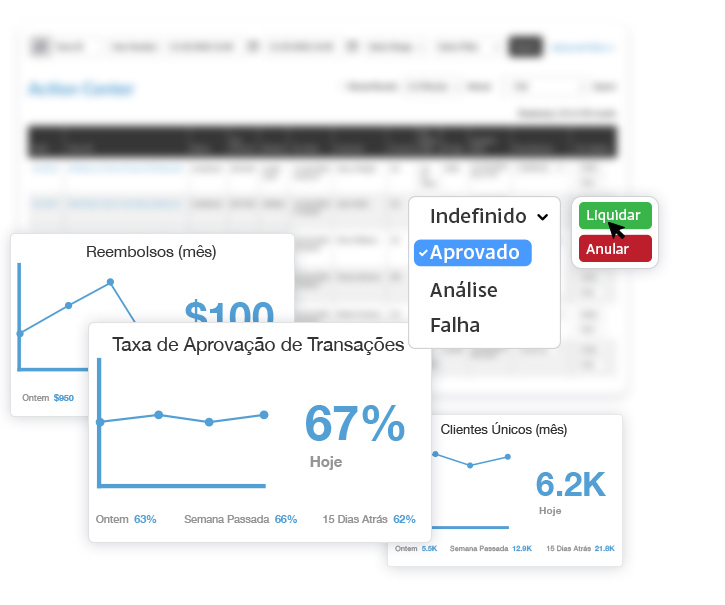
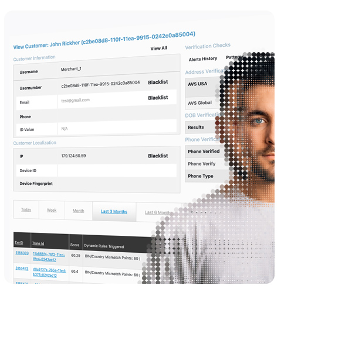

Conheça Suas Transações - por Dentro e por Fora
Transacione Globalmente
Nossa plataforma global permite que você gerencie facilmente seus clientes, riscos de fraude, canais de pagamento e transações em um hub centralizado, independentemente do mercado ou região.
Defesa Antifraude Premium
Crie regras de risco ou aproveite regras de risco predefinidas, defina limites de risco e ações dinâmicas do sistema e aproveite fluxos de trabalho automatizados de triagem de fraude transacional.
Comportamento e Padrões
Nossa plataforma verifica e vincula automaticamente o comportamento da conta e da transação para identificar tendências, padrões de comportamento e uso de várias contas para resposta imediata a fraudes.
Proteja suas Receitas
As perdas dos comerciantes em todo o mundo devido a fraudes de pagamento online entre 2023 e 2027 excederão US$ 343 bilhões. Não perca renda para fraudes. Detectamos riscos em tempo real.
Todos os dados...
para transações seguras.
Bancos de Dados
Carregue, gerencie e aproveite listas de permissões e bancos de dados negativos em tempo real, juntamente com motivos de recusa e associações de alto risco para análises de fraude eficientes.
Rede AcuityTec
AAcesse nossa lista de permissões de elite e bem estabelecida, bancos de dados negativos e de alto risco que se expandem continuamente em nossa rede desde 2011.
Localização Geográfica
Obtenha uma variedade de informações geográficas e técnicas críticas, incluindo país, fuso horário, código postal, código de área, endereço, proxy, endereço IP e informações de rede.
Inteligência do Dispositivo
Confirme identidades combinando impressão digital do dispositivo, ID do dispositivo, reputação e detecção de evasão para sinalizar atividades suspeitas no ponto de entrada.
Verificação Instantânea do BIN
A pesquisa automatizada obtém o número de identificação do banco do seu cliente, incluindo o emissor do cartão, nível do cartão e dados do tipo de cartão e alertas quando um novo cartão é verificado.
Verificação de Conta Bancária
Reduza seu risco financeiro para transações ACH ou EFT recuperando e analisando de forma cruzada as informações de KYC e conta bancária do cliente com os detalhes fornecidos.
Análise de criptografia
Garanta que as transações criptográficas sejam válidas, seguras e livres de atividades ilícitas, verificando endereços e carteiras em relação a uma variedade de fatores de risco em um conjunto de blockchains.
Ver Solução
Autenticação 2FA
Adicione uma camada extra de segurança e habilite a autenticação multifator de perguntas baseadas em conhecimento, telefone SMS 4-PIN até reconhecimento facial dinâmico.
Visualizar Serviços de Dados
Identificação Digital
Um conjunto completo de KYC baseado na Web está prontamente disponível para reforçar as transações por telefone, verificação de endereço, SSN, validação de identidade global e muito mais.
Visualizar Serviços de Dados

Transações Confiantes
Abordagem Baseada em Regras
Selecione a partir de um conjunto de regras de risco predefinidas ou configure infinitas opções com scripts de regras de formato livre. Garantir que as verificações transacionais e a análise de risco atendam ao seu apetite de risco exclusivo.
Alertas de Análise
Com base em seus limites de risco personalizados, receba imediatamente alertas para pontuações de risco geradas após verificações de dados transacionais que identificaram riscos ou atividades suspeitas.
Aprendizado de Máquina
Uma plataforma combina dados, comportamento e padrões para descobrir rapidamente possíveis ameaças de risco e executar automaticamente ações do sistema ou fazer recomendações para proteger sua empresa contra fraudes.
Visualizar Detecção de Fraude
Monitorar e Gerenciar
Fila de Transações
Visualize rapidamente todas as informações de alto nível da transação com a capacidade de filtrar por informações do cliente, ID da transação, pontuações de risco, processador, intervalo de datas e muito mais. Realize análises de fraude, mergulhe profundamente no perfil de um cliente e liquide ou anule uma transação em um centro de ação centralizado.
Widgets do Painel
Widgets de painel de dados ao vivo configuráveis e personalizados garantem uma visão focada dos dados, desde conversões, atividade do centro de ação, taxa de aprovação, média do tíquete inicial, etc.


Granular em um Clique
Boleto de Transação
Receba detalhes granulares, incluindo data, valor, método de pagamento, resultados da verificação, pontuação de risco, informações financeiras, limites de depósito, detalhes do cliente e muito mais. Garantir que todos os dados sejam capturados para identificar mudanças de comportamento automaticamente, ao mesmo tempo em que suporta seus relatórios de AML.
Perfis de Clientes
Mergulhe profundamente em qualquer cliente para ver seus resultados de dados, histórico de alertas e transações e gerenciar padrões, evidências, exceções, dispositivos e histórico de login com uma visão clara e unificada.
Visualizar Monitoramento de Fraudes
Informações Sobre Fraude
Dados orquestrados e aprendizado de máquina fornecem recomendações de prevenção de riscos em todo o seu fluxo transacional. Identifique várias contas, comportamentos suspeitos e padrões que podem sinalizar fraude.
Gestão de Caso
Dados orquestrados trazem visões claras de risco. Nossos fluxos de trabalho de verificação automatizada notificarão você sobre sinais de risco que requerem intervenção humana. Economizando tempo e esforço gerenciando transações e clientes.
Estornos
Previna, conteste e analise estornos de forma eficaz com absoluta facilidade. Seja alertado em tempo real para interceptar e resolver disputas de pagamento com um centro de resolução de estorno automatizado e inteligência de painel ao vivo.
Comunicando B.I.
Nossos especialistas em risco dedicados trabalharão com você para estabelecer soluções personalizadas de B.I. Relatórios para garantir que as regras de risco sejam otimizadas por região ou mercado para combater a fraude com mais eficiência.
Solução completa
- Verificações de dados transacionais e KYC
- Fluxos de trabalho de verificação personalizados
- Filtros personalizados e configurações de regras
- Pontuação de risco com aprendizado de máquina
- Perfis de clientes, histórico de transações e central de ações
- Ferramentas colaborativas e gerenciamento de listas
- Relatórios de atividades suspeitas e B.I. dados de relatórios
Obter Demonstração Hoje